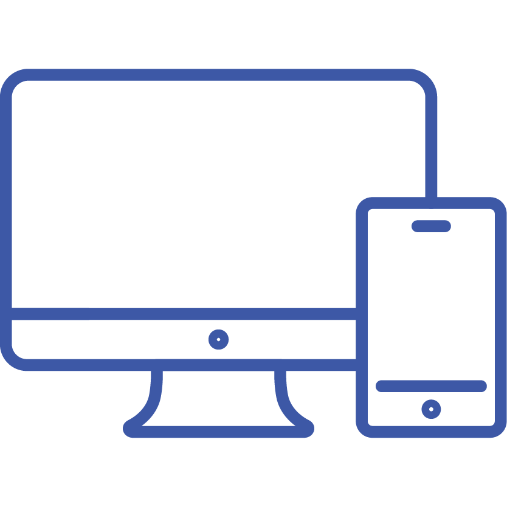
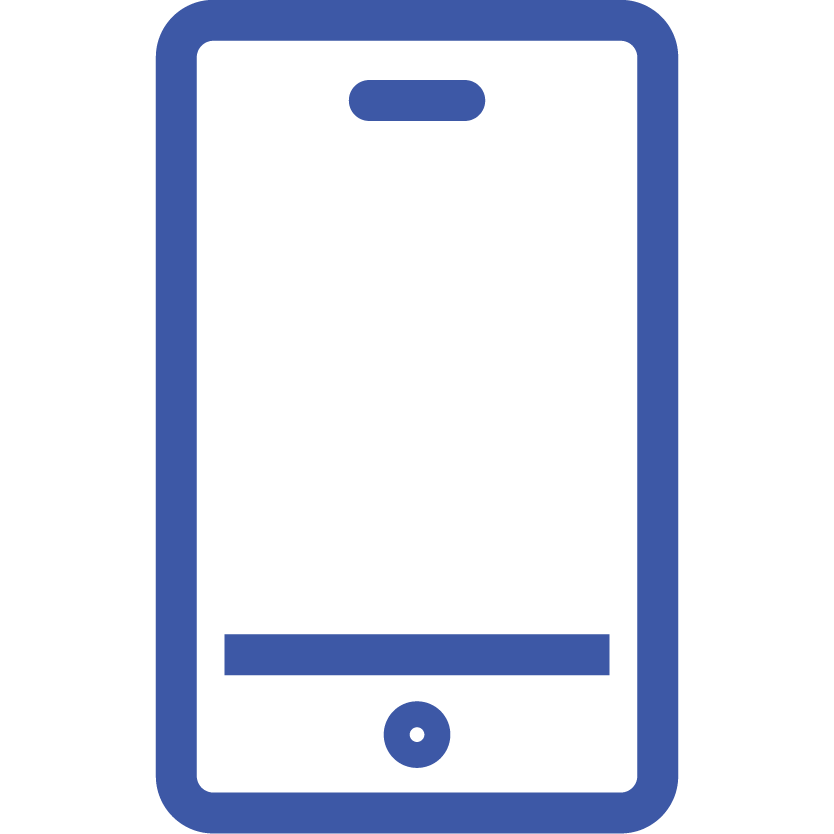

RESPONSIVE WEB DESIGN
approach that suggests that design and development should respond to the user's behavior and environment based on scree size, platform and orientation.
RESPONSIVE WEB DESIGN
Mobile application development is the process of making or creating a mobile application to run on various mobile platforms. A mobile platform is a mobile operating system.